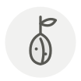

Caper berries
Câprons (câpres à queue)
| Latin name | Capparis spinosa |
|---|---|
| Family | Condiments & ferments |
| Origin | Mediterranean scrub and old walls |
| Season | July – September |
| Flavour | Briny · Tangy · Mild |
| Typical price | 12–24 €/kg |
What it is
The caper bush flowers for a single day — open at dawn, spent by dusk — and the berry is what follows if the bud was left on the plant. A grower has to choose: pick the buds for capers, or let them go and take the fruit, since one bush will not give a full crop of both.
In the kitchen
Serve them whole with the stalk on, at room temperature, and do not chop them: the seeds are the texture you are buying. Rinse briefly only — a long soak leaves them limp and hollow-tasting.
Goes with
Anchovy Olive oil Manzanilla Serrano ham Tomato Sea bass
Same species
Caper leaves Capers Salt-packed capers
In season alongside
Salt marsh lamb Japanese abalone Chabichou du Poitou Matjes herring Irish moss Warty venus clam
Something wrong here, or missing? Tell us